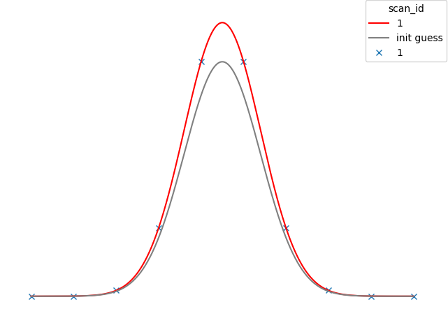
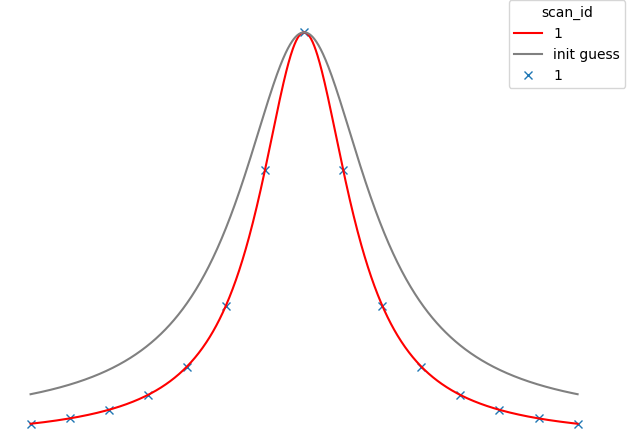
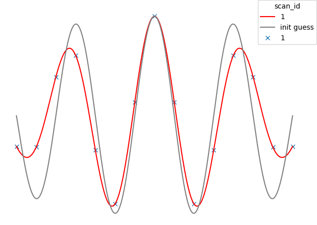
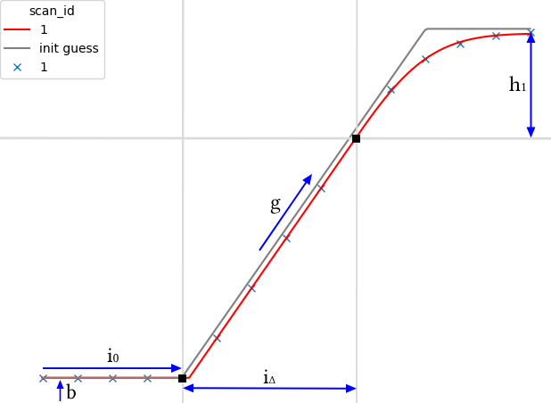
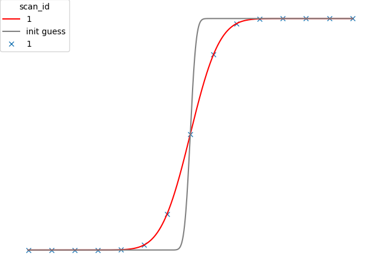
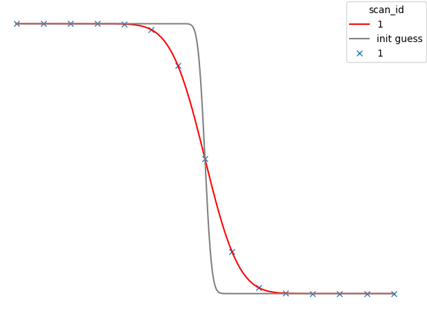
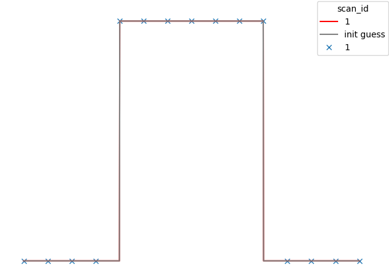
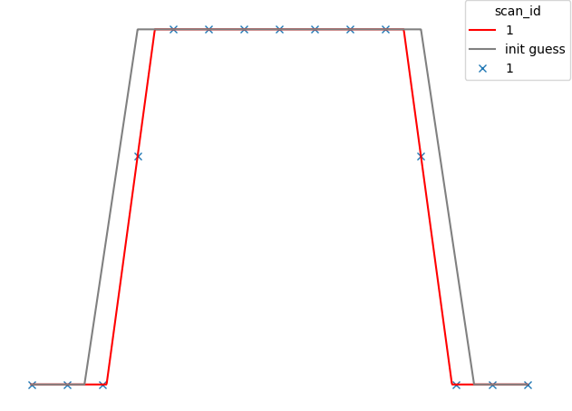

Standard Fitting Models
Linear
API Reference: Linear
c1- Gradientc0- (y) Intercept
Polynomial
API Reference: Polynomial
cn…c0- Polynomial coefficients
For a polynomial degree n:
Gaussian
API Reference: Gaussian
amp- The maximum height of the Gaussian abovebackgroundsigma- A scalar for Gaussian widthx0- The centre (x) of the Gaussianbackground- The minimum value (y) of the Gaussian

Lorentzian
API Reference: Lorentzian
amp- The maximum height of the Lorentzian abovebackgroundsigma- A scalar for Lorentzian widthcenter- The centre (x) of the Lorentzianbackground- The minimum value (y) of the Lorentzian

Damped Oscillator (DampedOsc)
API Reference: DampedOsc
center- The centre (x) of the oscillationamp- The maximum height of the curve above 0freq- The frequency of the oscillationwidth- How far away from the centre will oscillations last for

Slit Scan (SlitScan)
API Reference: SlitScan
background\(b\) - The minimum value (y) of the modelinflection0\(i_0\) - The x coord of the first inflection pointgradient\(g\) - The gradient of the sloped-linear section of the modelinflections_diff\(i_{\Delta}\) - The x displacement between the two inflection pointsheight_above_inflection1\(h_1\) - The y displacement between inflection 1 and the model’s asymptote

Error Function (ERF)
API Reference: ERF
cen- The centre (x) of the modelstretch- A horizontal stretch factor for the modelscale- A vertical stretch factor for the modelbackground- The minimum value (y) of the model

Complementary Error Function (ERFC)
API Reference: ERFC
cen- The centre (x) of the modelstretch- A horizontal stretch factor for the modelscale- A vertical stretch factor for the modelbackground- The minimum value (y) of the model

Top Hat (TopHat)
API Reference: TopHat
cen- The centre (x) of the modelwidth- How wide the ‘hat’ isheight- The maximum height of the model abovebackgroundbackground- The minimum value (y) of the model

Trapezoid
API Reference: Trapezoid
cen- The centre (x) of the modelgradient- How steep the edges of the trapezoid areheight- The maximum height of the model abovebackgroundbackground- The minimum value (y) of the modely_offset- Acts as a width factor for the trapezoid. If you extrapolate the sides of the trapezoid until they meet above the top, this value represents the y coord of this point minus height and background.
